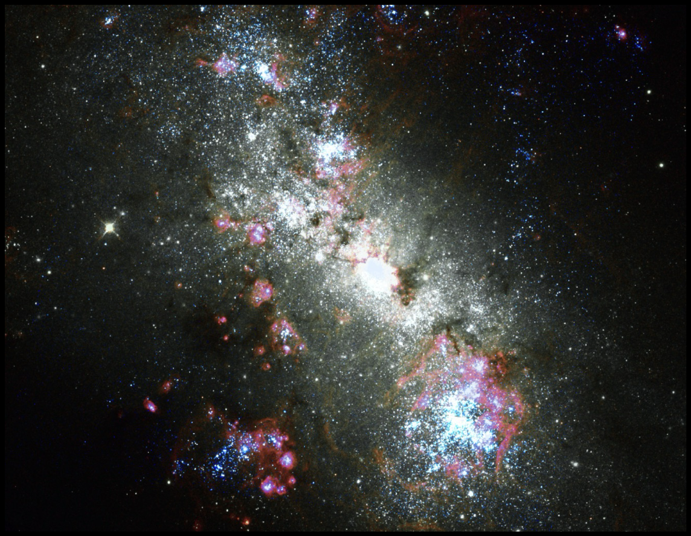
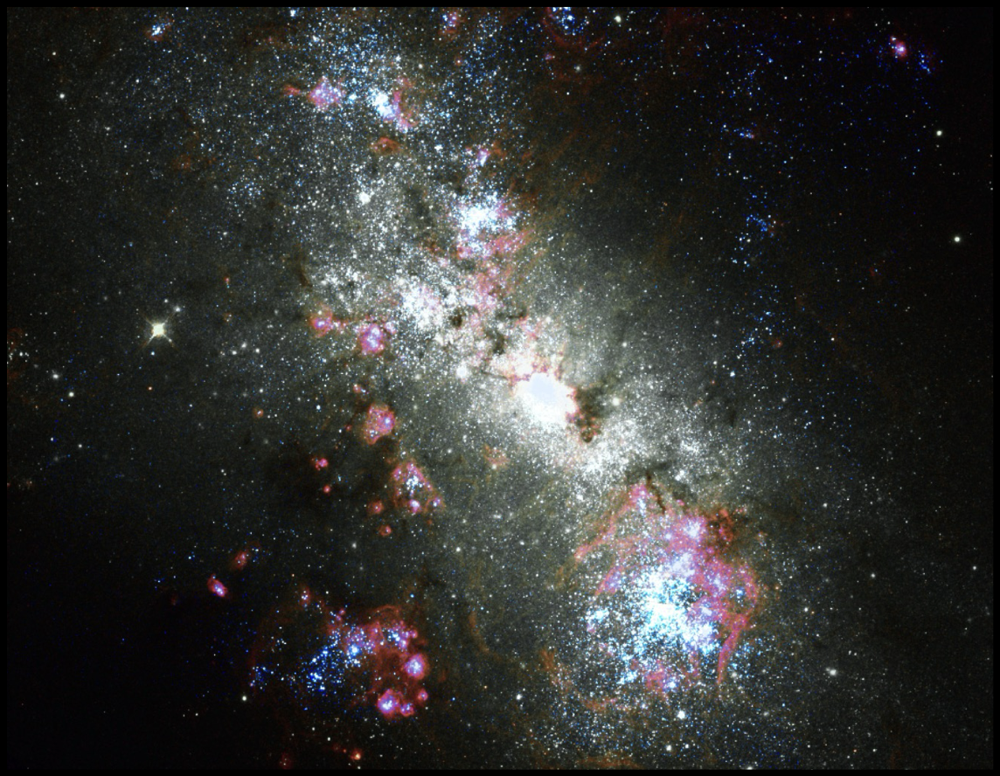
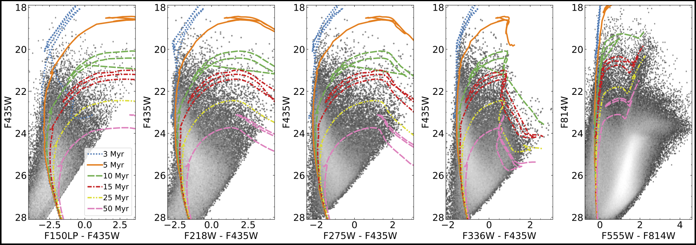
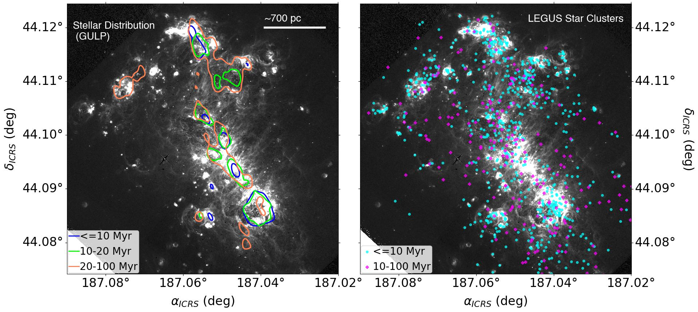

Overview
The GULP-Galaxy UV Legacy Project is a large far and near ultraviolet (FUV+NUV) treasury program designed to characterize the properties of resolved massive stars, OB associations, and young massive star clusters in nearby star-forming galaxies. Utilizing the unique spatial resolution and UV capabilities of Hubble Space Telescope (HST), GULP mapped 27 nearby star-forming galaxies in the FUV with the Solar Blind Channel (SBC) of the Advanced Camera for Surveys using F150LP filter and in the NUV with the UVIS channel of the Wide Field Camera 3 (WFC3) using F218 filter. These observations allow us to trace the regions of most recent star formation (SF) and simultaneously examine the effects of UV dust attenuation in different galactic environments.
  Left: Archival observations of Magellanic-type galaxy NGC 4449 using GALEX, where blue and red colors represents the FUV and NUV. Right: A color composite image of NGC4449 using our new HST-GULP observations. The SBC filter F150LP is in blue, the ACS F658N filter in red, and the ACS filter F438W (from archival HST-LEGUS, survey) in gray. In both images North is up, and East is toward the left. Image Credits: Sabbi & Meena et al. (in prep)  Left: Archival observations of Magellanic-type galaxy NGC 4449 using GALEX, where blue and red colors represents the FUV and NUV. Right: A color composite image of NGC4449 using our new HST-GULP observations. The SBC filter F150LP is in blue, the ACS F658N filter in red, and the ACS filter F438W (from archival HST-LEGUS, survey) in gray. In both images North is up, and East is toward the left. Image Credits: Sabbi & Meena et al. (in prep)
|
 An example of color-magnitude diagrams (CMDs) using a combination of GULP and archival multi-wavelength observations (here LEGUS), providing a comprehensive view of the stellar populations in our target galaxies (here NGC 4449). Overlaid on these CMDs are Padova isochrones representing different stellar ages (from 3 Myr to 5 Myr), serving as crucial guides for interpreting the evolutionary stages of the observed stars. Notably, the F218W filter (shown in the second panel) plays a key role in constraining UV dust attenuation, helping to disentangle the effects of extinction on the observed stellar populations. As we move from optical to far-UV wavelengths (progressing from right to left across the panels), the increasing separation between isochrones becomes evident. This separation significantly enhances the sensitivity and resolution to stellar ages for the young sterllar populations. Image Credits: Sabbi & Meena et al. (in prep)
|
 Left: Density contours representing stellar populations younger than 100 Myr are overlaid on the continuum-subtracted Hα image (F668N – F814W) of NGC 4449, obtained using GULP observations. This visualization reveals a strong alignment between young stars and the ionized gas distribution, offering insights into the galaxy's star formation history. The central regions are dominated by younger stellar populations, while the northern regions display evidence of multiple star formation episodes, suggesting a more complex evolutionary timeline.
Right: The spatial distribution of star-clusters identified in LEGUS survey. Young star clusters appear more tightly grouped compared to older ones. A comparison between the field star populations (left panels) and the star-clusters shows that field stars younger than 100 Myr predominantly align with the concentrations of young star clusters. This co-alignment indicate a hierarchical star formation process, where stars initially form in clustered environments and gradually disperse into the surrounding field over time.Image Credits: Meena et al. (Submitted to ApJ)
|